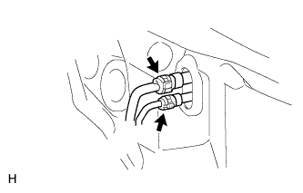
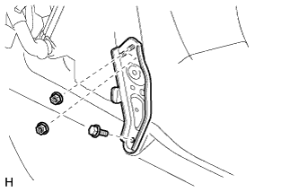
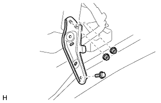

FRONT AIR CONDITIONING UNIT > REMOVAL |
| 1. DRAIN ENGINE COOLANT |
Drain the engine coolant (Click here).
| 2. RECOVER REFRIGERANT FROM REFRIGERATION SYSTEM |
Start the engine.
Turn the A/C switch on.
Operate the cooler compressor while the engine speed is approximately 1000 rpm for 5 to 6 minutes to circulate the refrigerant and collect the compressor oil remaining in each component into the cooler compressor.
Stop the engine.
Recover the refrigerant from the A/C system using a refrigerant recovery unit.
| 3. DISCONNECT CABLE FROM NEGATIVE BATTERY TERMINAL |
| Condition | Waiting Time |
| Vehicle enrolled in G-BOOK system | 6 minutes |
| Vehicle not enrolled in G-BOOK system | 1 minute |
| 4. DISCONNECT AIR CONDITIONING TUBE AND ACCESSORY ASSEMBLY |
|  |
Using SST, remove the piping clamp.
Attach SST to the piping clamp.
Push down SST and release the clamp lock.
Pull SST slightly and push the release lever, and then remove the piping clamp with SST.
| *1 | Release Lever |
| *a | Push |
| *b | Pull |
Remove the piping clamp from SST.
Disconnect the air conditioning tube and accessory assembly.
Remove the grommet.
| 5. DISCONNECT HEATER WATER INLET HOSE AND HEATER WATER OUTLET HOSE |
Using pliers, grip the claws of the clips and slide the 2 clips.
Disconnect the 2 heater water hoses.
| 6. REMOVE WINDSHIELD WIPER MOTOR ASSEMBLY |
Remove the windshield wiper motor assembly (Click here).
| 7. REMOVE INSTRUMENT PANEL SUB-ASSEMBLY |
Remove the instrument panel sub-assembly (Click here).
| 8. REMOVE STEERING COLUMN ASSEMBLY |
Remove the steering column assembly (Click here).
| 9. REMOVE FRONT SEAT ASSEMBLY LH |
Remove the front seat assembly LH (Click here).
| 10. REMOVE FRONT SEAT ASSEMBLY RH |
Remove the front seat assembly RH (Click here).
| 11. REMOVE FRONT FLOOR CARPET ASSEMBLY |
| 12. REMOVE REAR NO. 3 AIR DUCT |
Detach the 3 clamps and 6 claws and remove the rear No. 3 air duct.
| 13. REMOVE REAR NO. 1 AIR DUCT |
 |
Detach the 3 clamps and 6 claws and remove the rear No. 1 air duct.
| 14. REMOVE NO. 1 INSTRUMENT PANEL BRACE MOUNTING BRACKET LH |
|  |
Remove the 2 nuts, bolt and No. 1 instrument panel brace mounting bracket LH.
| 15. REMOVE NO. 1 INSTRUMENT PANEL BRACE MOUNTING BRACKET RH |
|  |
Remove the 2 nuts, bolt and No. 1 instrument panel brace mounting bracket RH.
| 16. REMOVE NO. 1 AIR DUCT SUB-ASSEMBLY |
Detach the 3 claws and No. 1 air duct sub-assembly.
| 17. REMOVE NO. 2 AIR DUCT SUB-ASSEMBLY |
 |
Remove the screw.
Detach the 2 claws and remove the No. 2 air duct sub-assembly.
| 18. REMOVE INSTRUMENT PANEL REINFORCEMENT ASSEMBLY WITH AIR CONDITIONING UNIT ASSEMBLY |
Detach the clamps and disconnect the connectors.

Remove the bolts, nuts and wire harness.
Remove the instrument panel reinforcement assembly with air conditioning unit assembly.
Remove the 5 caps.
Using a T40 "TORX" socket, remove the 5 "TORX" bolts.
Using a 12 mm hexagon wrench, loosen the 2 collars.
Remove the bolts, the nuts and the instrument panel reinforcement panel assembly with air conditioning unit assembly.
| 19. REMOVE INSTRUMENT PANEL REINFORCEMENT ASSEMBLY |
Detach the 2 claws and remove the 5 bolts and instrument panel reinforcement assembly.